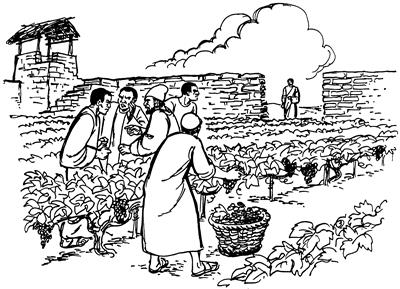
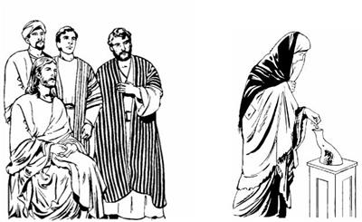

Yesusti yubu likipto ambarelamsiogti, Yahudi nimiri Allahri awe toropnangag olamsiekne sembe sunumna ambatsiogha
(Matius 21:33-46; Lukas 20:9-19)
12
1 Sin memnang Allah sembe pairopnang sikiniyaboap, Musari mome toro pibog yubu ambatsiropnangap, Yahudi nimi sembe sikiniyaboap tanekori, “Etneri Yohanes pogho nu ekon,” seekpa Yesusti samoro, “Undop pagha tanena, na pogneonge sembe babe ambatsinun kom,” seog. “Ambatsinun kom,” seog aghana, sunumna nhon alniro ambarelamsiogne ane.“Nimi nhondi awe wero haing anggur aweag mebog. Mebogti leka kanero tobogti, haing anggur wana mag loltero pelengenag wip nhon hoghaog. Wip nhon hoghaogti, yae ua unnang sembe ae mororo ae alikinag solingkiog. Ni awe wero mebogti, ae solingkiogti, awe toropnang yae ua unnangag, ‘Nari awe tolapmunba, wana mauamleba, a'unap nanap undo pogholdalamukap,’ aro yubu nikne lebek. Yubu nikne lebekpa, awe ngainge poneko laplobi agha weag sip piog. 2 Piogti wamogha haing anggur wana maulamog li yaogpa, awe ngainge ponekori eldi arukna poglamogti, ‘Awe wero yae ua urop nangag na sembenge tol pululam,’ aro poghog. 3 Poghog aghana, awe wero yae ua urop nang tanekori eldi arukna aneko saelbaek. Salero olamekti, tatna koma ‘Pululam,’ seekpa, nongog mo yaog. 4 Nongog yaogpa, awe ngainge ponekori eldi arukna nen nhon poghog. Poghog aghana awe yae ua urop nang tanekori usoghag olamekti, yubu neplamekti, oro yaghekpa yaog. 5 Usoghag obekpa yaogpa, awe ngainge ponekori eldi arukna wilindipne babe poghog aghana, nimi eneko ya'ag obek. Ya'ag obekpa, awe ngainge ponekori eldi arukna maikno poglamsiog aghana, nenne mulog olamsiekti, nenne ya'ag olamsiek. 6 Undo olamsiekpa, wene etne agha awe ngainge ponekori pognep? Wene elme o'onange neneko ot nhonog wamla. Undop aghana, elme neneko babe awe yae ua urop nang tanekoag poghog. Awe ngainge ponekori, ‘Sindi, “Awe ngainge elme yalba kiplamukap,” sembaikti, elagna pogto tarukang,’ aro elme poghog.

7-8 Poghog aghana, awe yae ua urop nimi tanekori, ‘Awe ngainge elme, el amik awe ngai tanepne neneko wene ane yalamla. Nuri el obebe andarina iliri saeagha aneko nun saeag timbalul,’ seekti saelbaekti ya'ag obek. Obekti nimi teptoba aneko awe sirikag toboglopsiek,” aro Yesusti sunumna ambatsiog.
9 Sunumna ane wene aro ambatsiogti hailamsiogti, “Awe ngainge poneko amik yaleri, awe yae ua urop nimi tanekoag huahilul? Yaleri awe yae urop nimi taneko luknuro ya'ag opsileri, awe aneko yog nimiag ‘Awe wero yae wamlulom,’ aro nimi saeag piplul. 10 Allah yubu samenag mome toro pibogneag kemelamlom aghana, ekon taom te?
‘Ae sorop nangdi kirik nene mali aro toboghaek
aghana kirik neneko yangan kirik o'omne yangap tao.
11 Yangan kirik o'omne nembaonge Allah mori uaoba,
nuri awi sirik uro kemelamap,’
aro mome toro pibog,” seog.
12 Sunumna nene wene aro ambatsiogpa, Yahudi nimi sikiniyaboap, Musari mome toro pibog yubu ambatsirop nangap, memnang Allah sembe pairopnangap tanekori ka'ebaek. Ka'ebaekti sindi karong senelamekti, “Nunag ‘Undo-undo malia ulamlom,’ aro yubu likipto lepla,” sembaekneag agha, “Welaro el salero haing sae kaubaukap?” aro ulamek. “Saelbaukap,” aro ulamek aghana, sindi “Nimi maikno tanekori nu wabhiikag,” aro logti, saelban koma Yesus liloa piek.
Yahudi nimiri Yesusag, “Kal ma'al Roma nimi yubu sia leropne Kaisar sembe wali pibukap to, kom to?” aro haibaeka
(Matius 22:15-22; Lukas 20:20-26)
13 Wamekpa, Yahudinang sikiniyabori Farisi nimi etpareap, nimi nubunge Herodesag neleptop nimi etpareap, “Yesusag pimundi, monag aluktop yubu haibamunba, Yesusti yubu malinge leplea ka'ebalulom,” aro pogsiek. 14 Pogsiekpa, Yesusag yaekti hailamekti, “Nai, andi nimiag ‘Ologne to, nubunge to,’ aro kembahin koma wali yubu ambarelamsilam. Ane sembe nu el wamapne, ‘Nimiri na sembe wali sembanukang,’ semban koma Allahri seneropne sunsunum uro sik yubu ambarelamsilam. Ane sembe andi yubu ka'ebaukap. Roma nimiri nu luknuhiro saelba uhiropne nubunge Kaisar ponekori nunag, ‘Kal ma'al a'undi saeag agha na sembe pogto tarelamnululom,’ aro arukahiog. ‘Tarelamnululom,’ aro arukahiogpa, nuri wali el tarelamukap to, kom to?” aro monag aluktop yubu haibaek.
15 Wene aro haibaekpa, Yesusti seneraglamogti, “Sindi yubu lilim walingeag agha lebang aghana, ‘Yesusti leplengeag agha haing sae kaupto saelbaukap,’ sembangdi haibaneang,” aro Yesus el taog. El taogti, yubu lelamogti, “Sa'a sembe a'undi ‘Selbel werobag sae kiliro pailbukap,’ aro undo haibanelom? Kal ma'al kirik wanange nhon payamunba, nari kembanun,” seog.
16 Wene seogpa, sin kal ma'al kirik wana nhon tarekpa, Yesusti salero kemelamogti, “Kal ma'al kirik wana aneag etneri si wamla? Etneri yame sunumna wamla?” aro maneri haibahiog.
Wene seogpa sindi, “Roma nimi nubunge Kaisarti yame sunumnaap eldi siap kal ma'al aneag wamla,” seek.
17 Wene seekpa Yesusti, “Kal ma'al aneag Kaisarti yame sunumnaap eldi siap pairop tanena, Kaisarti a'unag ‘Pogto tatne,’ sele tanena, ‘Eldinge,’ aro tarelamlulom. Neapna sa'a-sa'a Allahringe wamla tanena, Allahag tarelamlulom,” seog.
Wene seogne ka'ebaekti, “Yaghe, eldi wana hektopne agha ambatsil,” seek.
Sadukinangdi Yesusag yaekti, nimi teptopne nen kamag tanepne sembe haibaeka
(Matius 22:23-33; Lukas 20:27-40)
18 Ik nhon sum Yahudi nimi Sadukinang etpare Yesusag yaek. Saduki nimiri seneraglameknena, “Nimi teptopne nimi nen amik kamag taukang kom,” aro seneraglamekti, “Yesusag hairo mibukap,” aro yaek. 19 Yesusag yaekti hailamekti, “Nai, an yubu amoro ambarelamsilamne. Tam nhon ambatkebeba, andi lepmenne ka'ebukap. Samenag Musari mome toro pibog yubuag kemelamapnena, ‘Kabuni nhon me koma tebale tanena, yauog kel eneko ilipsaeri maupto topleri, eldo sembe lumbanep me nhon piplul,’ aro Musari mome tobog. 20 Tam nene sembe sunumna nhon ambatkukap. Sin eldoyabo ilipsabo nimi saekbare nang wamnari, yandonge poneko kelabo toamna agha me koma tebanep. 21 Tebaho tanena, ilipsae phendepne ponekori, ‘Naro lunumna me nhon wamso,’ aro yauog kel eneko maupnep. Maupnep aghana el babe me koma tebanep. Tebanepba ilipsae wilindipne ponekori babe undo unuanep. 22 Ilipsae tomne, lamne, no'opne undobog nimi saekbare abenekori kel eneko maupnep aghana, me koma ni tebanep. Komopnag keleneko babe tebanep. 23 Nimi saekparenang enekori keleneko toamna ane sembe, amik nimi teptopne kamag tanep sumeneko keleneko etneri kel tanep?” aro monag alukto Yesusag haibaek.
24 Wene aro haibaekpa, Yesusti tangaro ambarelamsiogti, “A'un Sadukinang Allah yubu mome toropne seneraglamlom kom. Allahri mikibag agha nimi nen samoro kamag nenehiropne sembe babe sik senelamlom kom. Ane sembe a'un loba uro seneraglamlom. 25 Aghana nimi teptopne nen samoro kamag taukang sumeneko, nengabo kelabo toptangkamukang kom. Allah arukna imagnang malaikat saog uro wamikti, nengabo kelabo toptangto koma wamukang,” seog. 26 Wene seogti, Yesusti nen tipto ambarelamsiogti, “Nimi nen samoro kamag taukangne sembe olog ambatsinun. A'undi Allah yubu Musari mome toro pibog yubu olog kemelamlom kom te? Musari Allah yubu mome toro pibog yubuna, Musa alog kal peramag sekogpa, Allahri elag ambarog yubu sembe ekon te? Musa alog kal peremag sekoghag kal aneko auk pog libagloa saog uro wamog aghana, kal aneko telamog kom. Anekoa Allahri Musaag ambarelamogti, ‘Nana Abrahamap, Ishakap, Yakubap saelba uhiropne wamna,’ aro Allahri ambarog. 27 Wene seog aghana, Abrahamap, Ishakap, Yakubap sam tebaek. Tebaek aghana ‘Sin nen kamag taukang,’ aro Allahri seneraghogti, ‘Nana Abrahamap, Ishakap, Yakubap saelba uhiropne wamna,’ seog. Nuni Allah ponekona, ‘Nimi ya'ag teptoba wamukang,’ aro saelba uhirop kom. Elna ‘Nimi kamag wamukang,’ aro saelba uhiropne wamla. A'un Saduki nimiri loba uro seneraglamlom,” seog.
Allahri “Undo-undo ulamlulom,” aro aruksirop yubu agha o'omne sembe Yesusti ambatsiogha
(Matius 22:34-40; Lukas 10:25-28)
28 Yesusap Saduki nimiap yubu lelameka anekoag nimi nhon Musari samenag mome tobog yubu ambatsiropne nhon yaogti ka'ebaog. Musari samenag mome tobog yubu ambatsiropne ponekori ka'elamogpa, Yesusti Saduki nimi anekoag samoro ambatsiogpa, ka'ebaogti, “Yesusti wali lepla,” sembaog. “Wali lepla,” sembaogti, Musari yubu ambatsiropne ponekori Yesusag hailamogti, “Allahri ni ‘Undo-undo ulamlulom,’ aro aruksirop yubu nelagha nubu sirikne, o'omne wamla?” aro haibaog.
29 Wene aro haibaogpa, Yesusti samoro ambarelamogti, “Allahri ‘Undo-undo ulamlulom,’ aro aruksirop yubu ni agha, o'omnena ane. Musari samenag mome toro palilamogti,
‘A'un Israel nimi ka'eamsut!
Nuni Allah, nia mangkina Saelba Uhiropne poneko ot nhonog wamla.
30 Nuni Allah nu Saelba Uhiropne poneko sembe a'undi wana ningkiap nong ningkiapti o'ona senelapmundi, Elag to'opto seneraglapmundi, El sembe o'ona sembom agha nong mikipne niag agha Eldi awe tolamlulom,’ aro mome toro pibog.
31 Allahri aruksirop yubu o'omne phendepnena, ‘Andamnang nong ningki o'ona seneptangkamlam saog uro a'undi so'oag nimi babe o'ona sembamsululam,’ aro mome toro pibog. Allahri aruksirop yubu orange babe wamla aghana, yubu o'omne paliag sirikne phende abene aghabog,” seog.
32 Yesusti wene seogpa, Musari mome toro pibog yubu ambatsiropne ponekori, “Andi sik yubu walinge ambatsilam. Nuni Allah ot nhonog wamlaba, mikip sirikne phendepne El saog uro wamla kom. 33 Nimiri ‘Nuni Allah kibukap,’ aro waliaba tatnepneap, lebe aroba oro Allah sembe aukag tamnepneap, ni ane wali. Ot phelektopnena, andi leplamne sunsunum uro nimiri unulamik abeneogna, phelektopne wali sirik wamla. Nimiri wana ningkiag agha Nuni Allah o'ona senero Elag to'opto seneraglamikti, nong mikipneag agha El sembe sol wali uro awe tolamik taneogna, wali sirikne phelektopne wamla. Neapna nimiri nong ningki o'ona seneptangkamap saog uro nuri so'oag nimi babe o'ona sembamsibe tanena, ane babe wali sirik. Nuni Allah sembe waliaba tatnep aghana, paliag sirik nena Allahap nimiap o'ona sembamsukap,” seog.
34 Wene seogpa, Yesusti ka'ebaogti, “Musa yubu ambatsiropne ponekori wana hektopneag agha wali uro lepla,” sembaog. “Wali lepla,” sembaogti, Musa yubu ambatsiropne ponekoag, “Andi leplamne ka'ebiagha, na el tan. Allahri wepto poghogne poneko lag taleri, nimi saelbamsile tanena, andi elag nelebanep,” seog.
Wene seogpa, yog nimiri, “Yesus sumbaukap,” aro logti, nimi nhondi babe elag nen hairo mibek kom.
“Nimiri Kristus poneko sembe, ‘Daud elme,’ alamangne sik to, kom to?” aro Yesusti hairo ambarelamsiogha
(Matius 22:41-46; Lukas 20:41-44)
35 Yesus Allahri Mem Ae aramag wamogti, tipto yubu ambarelamsiogti, “Sin Musari mome toro pibog yubu elnangdi ambarelamsiangne, ‘Allahri “Saelbamsululam,” aro wepto poglenge Kristus poneko sembe “Daud elme” aro engeropne,’ alamang. Sa'a sembe ‘Daud elme' alamang?” aro yubu ambatto haibahiog. 36 Haibahiogti, Yesusti nen tipto ambarelamsiogti, “Kristus yalenge poneko sembe ‘Daud elme' aro engelamang aghana, Daud eldamneri Kristus poneko sembe ‘Na saelba uneropne' aro engero lebog. Allah Eldamne Yame Walingeri nunisag Daud ponekoag ambarogpa, sunsunum uro Daud eldamneri Kristus poneko sembe mome toro pibognena,
‘Im So'o Ngainge ponekori na saelba uneropne ponekoag yubu lelamogti,
“Na sae sirik sip pulamen kekman, andi aisanang andi yan mombolag pipsinun,” seog,’
aro Daudti mome toro pibog.
37 Undop agha, nunisag Daud eldamneri Kristus poneko sembe ‘Na saelba uneropne' aro engelamog tanena, welaro nimiri Daud paliag nenero Kristus poneko sembe ‘Daud elme' aro engero lemnep?” aro ambatsiog.
Yubu ambarelamsiogpa, sin Allahri Mem Ae aramag wamek nimiri wana yeng uro ka'elamek.
Yesusti Musa yubu ambatsiropnang sembe wenehirop yubu ambatsiogha
(Matius 23:1-36; Lukas 20:45-47)
38 Ka'elamekpa, Yesusti yubu tipto ambarelamsiogti, “Sin Musari yubu ambatsiropnang tanekori ulamangne saog uro a'undi babe unuaheng kom. Sin Musa yubu ambatsiropnang taneko sindamneri paliag neneptangka nubu nimiri enektop ag walinge agha nongag wangalamangdi, nimiri pail wa'ina torobag wa'alamangdi, ‘Wali sembanehengdi, kipneheng,’ aro nimi whing toman pang yang ulamang. 39 Nimi poloro Allah yubu lerop aeag babe, nimi haiptangto kwaneng yoro nikag terobag babe, ‘Nimi nubunang purobag aghabog pukamsene,’ aro pulamang. 40 Sin nimiri, ‘Na kipneheng,’ aro unulamang aghana, aboapti kaldam kelabori ae babe, sae agha uropne babe sin Musari yubu ambatsiropnang tanekori taluro tolamang. O'ona sembahin koma taluro tolamang aghana, sindi malia uropne sembe ‘Niknip tanun,’ aro Allahag molona we uro kiliro lelamang. Unulamangne nene sembe ni tam kemero karebalulne ponekori kemelamsildi, tam ikin sirikne sinag pipsilul,” seog.
Kaldam kel nhondi ni el saeag wamogne Allah sembe pibogha
41 Wene seogti, Yesus Allahri Mem Ae aramag palamoghag agha aneko nimiri sae agha kal ma'al Allah sembe pairobag wamogpa, peramag pul piog. Pukamogti kemelamsiogpa, nimi maikno tanekori kal ma'al Allah sembe palilameka kembamsiog. Palilamek nimina, tup nimi maikno tanekori kal ma'al maikno palilamek. 42 Palilamekpa kembamsiogag agha kaldam kel sae agha orog kel nhon yaogti, kamna kapto torop kirik wana ologne phende pibog. Kamna kapto torop kirik wana pibognena, si toro tona babe ologha tatsinepne pibog.
43-44 Pibogpa kembaogti, Yesusti el yubu ka'ero neleptopnang “Yahut,” aro yopsiog. Yopsiogpa, elag yaekpa, ambarelamsiogti, “tup nimi maikno tanekori sikin saeag maikno wamlange agha pogto waliaba maikno palilamang. Maikno palilamang aghana, kaldam keleneri olog piplange, el saeag oroghag agha ni kwaneng toro tenne elag wamlange Allah sembe ni pipla. Tup nimi taneri pogto pibangne kembi agha, ‘Wali pogto pibang,’ sembanep. Aghana Nari a'unag sik uro lelamnange, kaldam keleneri el saeag oroghag agha ni tatla ane sembe, nimi ni tane wamangne kembiag agha, ‘Kaldam keleneri maikno phelektopne pipla,’ alamna,” seog.
